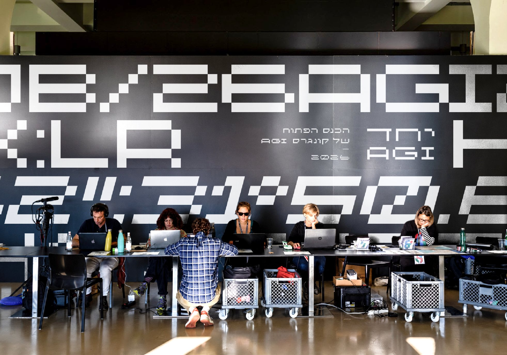
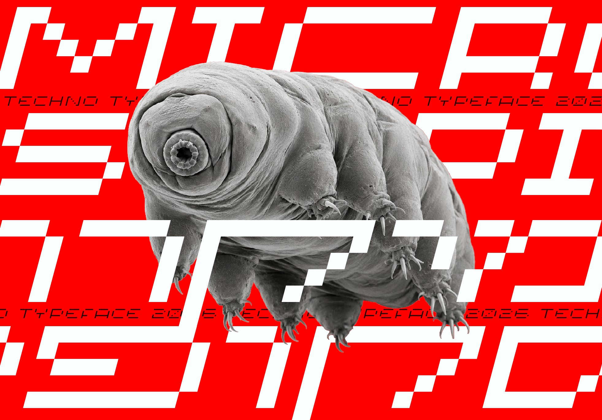
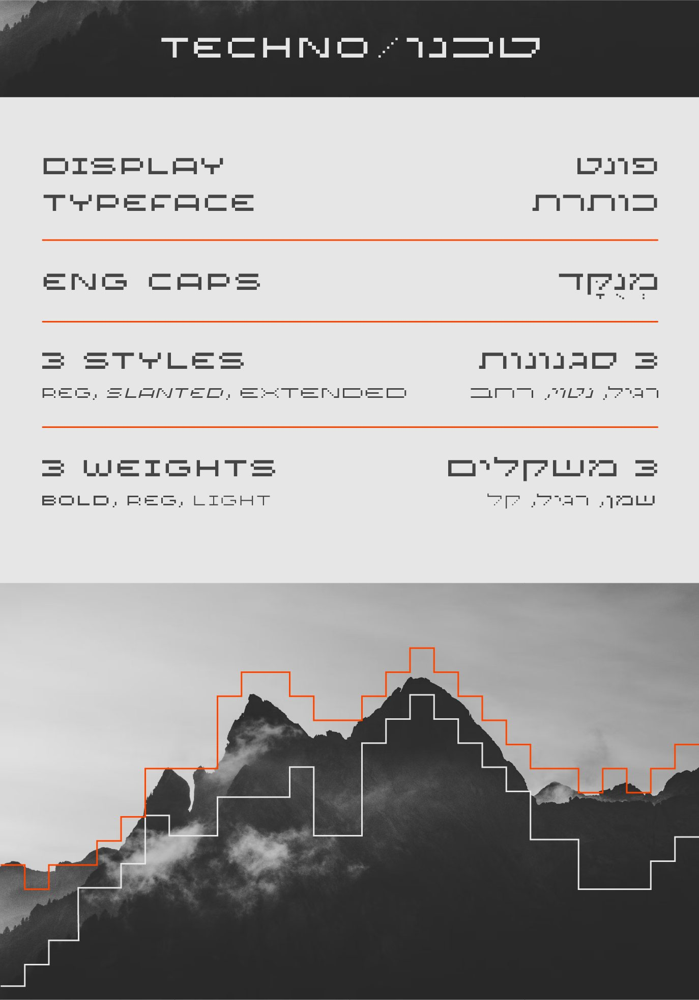
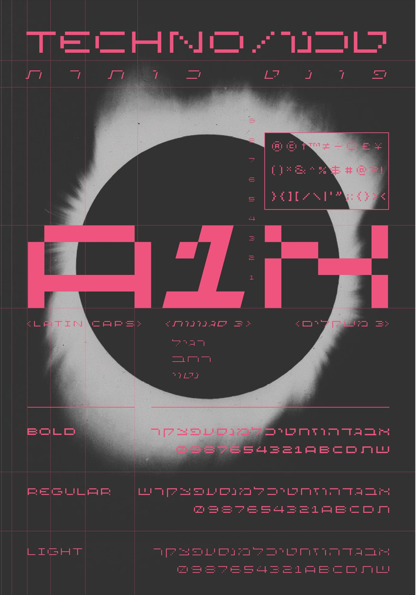
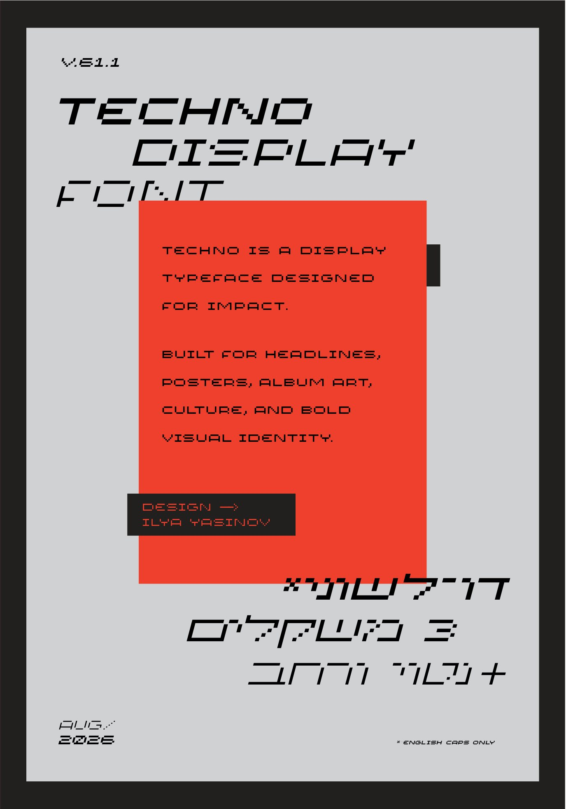
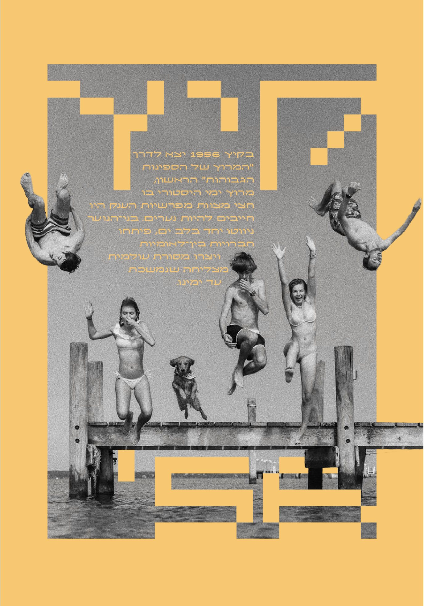
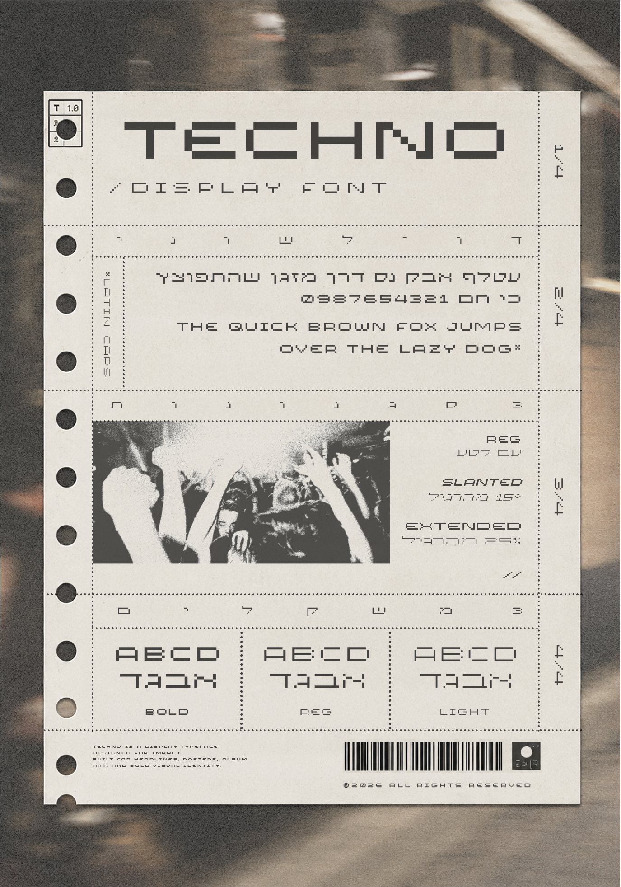
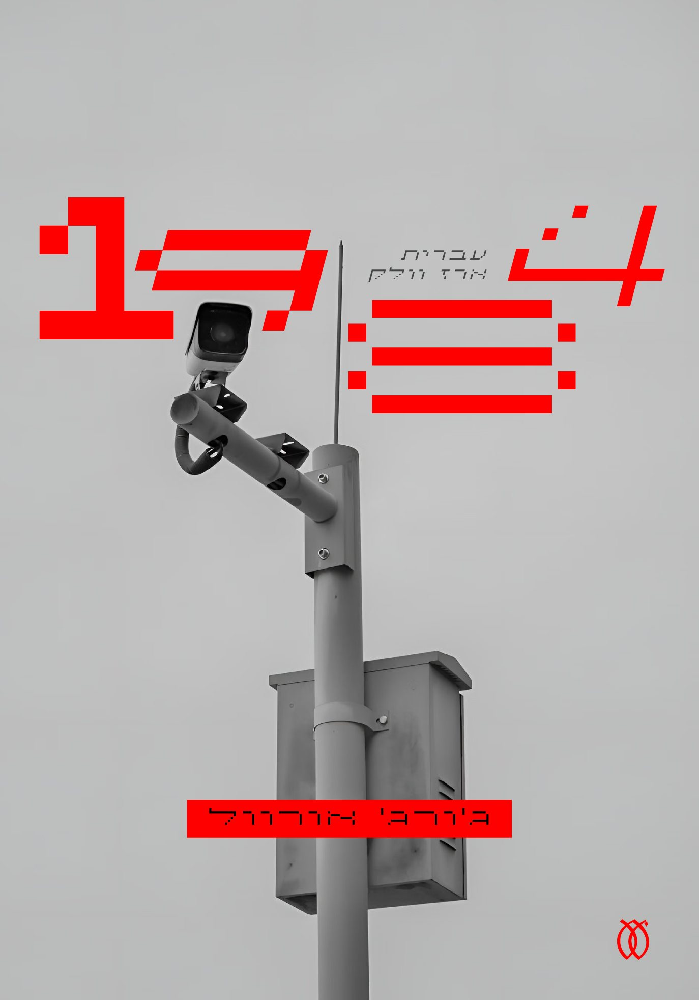
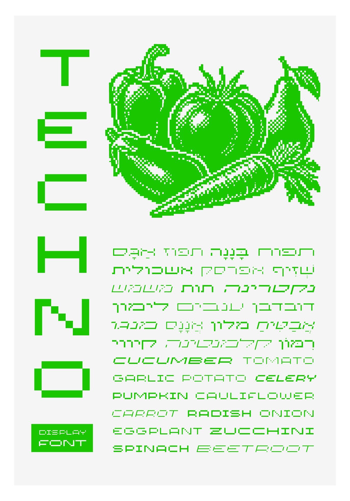
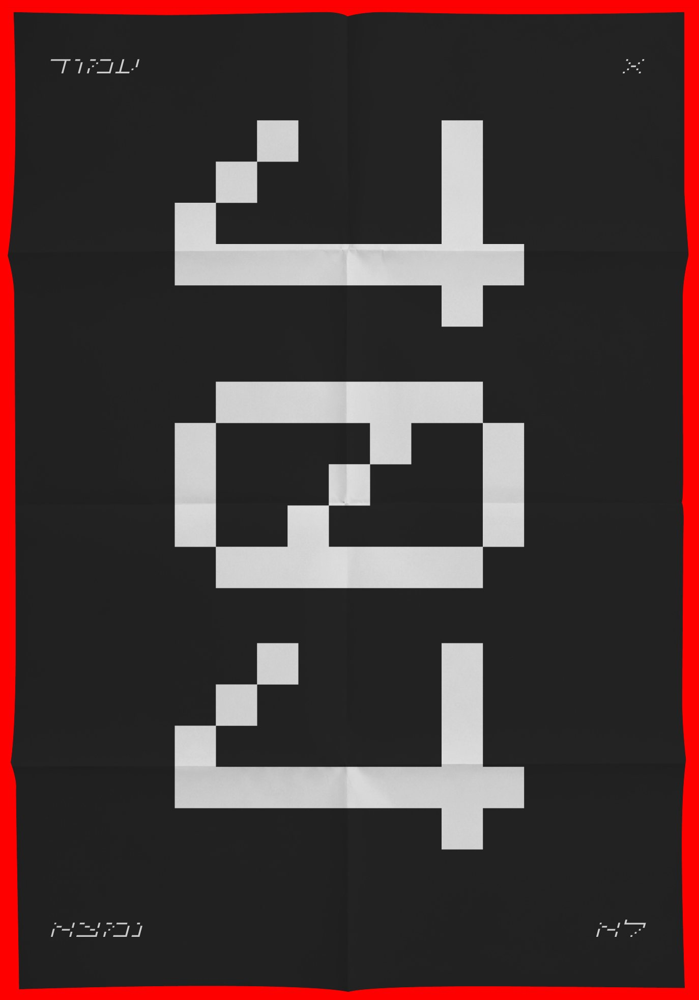

Techno is a display typeface designed for impact. Built for headlines, posters, album art, culture, and bold visual identity.
Typeface: Techno
Designed by: Ilya Yasinov
Year: 2026
Languages: Hebrew, Latin
Formats: OTF, WOFF2
BOLD
BOLD SLANTED
EXTENDED BOLD
EXTENDED BOLD SLANTED
BOLD
BOLD SLANTED
EXTENDED BOLD
EXTENDED BOLD SLANTED
Techno Extended Bold
טכנו TECHNO
Techno Bold Slanted
RAVE רייב
Techno Bold
מועדון CLUB
Techno Extended Bold Slanted
תל אביב BERLIN
Techno Extended Bold
AFTER PARTY אפטר
Techno Bold Slanted
גלריה GALLERY
Techno Bold
LINE UP ליינאפ
Techno Extended Bold Slanted
ויניל VINYL
Techno Extended Bold
128 BPM
Techno Bold Slanted
תערוכה EXHIBITION
Techno Bold
0123456789
0123456789
0123456789
Techno Bold
Unicode decimal: 1488
Unicode hex: 05D0
HTML entity: א
Unicode hex: 05D0
HTML entity: א
Techno in Use


Specimen







